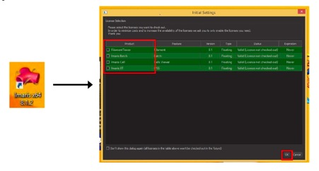
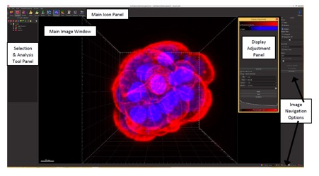

PART 1: INTRODUCTION TO IMARIS AND LICENSE INFORMATION
Imaris 3D/4D Analysis Software
Imaris is a 3D/4D data visualisation and analysis software produced by Bitplane, an Oxford Instruments company. Imaris allows you to 3D capture snapshots and animations for accurate visualisation of your data, as well as creating 3D surface renders and selections for measurements and quantification.
Use and Licenses
Imaris requires a license to operate. There are a number of institutional licenses available, which run on the Imaris software available on the MMI-MHTP Imaris 2014, Imaris 2011 and Imaris 2008 workstations. These workstations, and the Imaris licenses, can be booked via the ARIN booking system and are included as equipment available to all registered MMI-MHTP users. Bookings on analysis workstations are counted towards your usage hours. To access these workstations, and the software licenses without registering with MMI-MHTP, please contact MMI-MHTP staff to discuss hourly rates.
You can access a free 10 day trial of Imaris at http://www.bitplane.com/imaris/imaris. Click on ‘Download Imaris’ and complete the form.
Information and quotes for purchasing your own Imaris license can also be accessed via the Bitplane website.
Imaris Versions
Imaris x64 8.1.2 is the latest version of Imaris available on the MMI-MHTP workstations. This is the version that should be used if licenses are available. Open Imaris 8.1.2 from the desktop icon and select any special license(s) required from the selector by clicking the check box beside the licence and click OK. The standard license does not need to be selected, it will start automatically upon opening Imaris.

There are a limited number of licenses available for use which are shared with the facility on Monash campus. Please only select the license you need so other remain free for other people to use.
If Imaris is needed immediately but no licenses are available, Imaris 7.6.5 is available with a special license. Please see MMI-MHTP staff for assistance if you are not aware of how to access this.
This workshop and the accompanying notes will use Imaris 8 – but all notes are applicable to earlier version of Imaris, with the exception of “Arena Mode” which was an inclusion only in later versions of the software.
Information and Online Tutorials
You can find detailed technical information, helpful step-by-step guides, video tutorials and webinars for the Imaris software on the 'Bitplane Learning' website: http://www.bitplane.com/learning.
Using Imaris for the Workshop
If you are able to, please download and install the free Imaris trial to your laptop for use during the workshop. If you have already used the free trial previously or are unable to download this please inform MMI-MHTP staff so they can organise a training license for you. This is for temporary use only. It will be installed on your laptop before the workshop by MMI-MHTP staff and MUST be removed by staff at the conclusion of the workshop.
The Main Imaris Interface
Imaris opens as a full window on your screen. In the main window there are a number of icon panels for different functions. These are outlined below.
